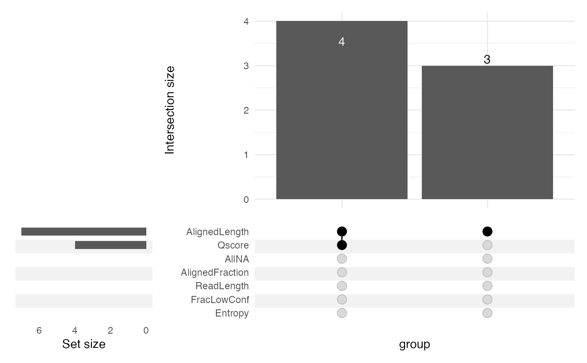

Filter reads
Usage
filterReads(
se,
assayName = "mod_prob",
readInfoCol = "readInfo",
qcCol = "QC",
minQscore = 0,
maxEntropy = Inf,
maxFracLowConf = 1,
minReadLength = 0,
minAlignedLength = 0,
minAlignedFraction = 0,
prune = TRUE,
onlyStats = FALSE,
removeAllNApos = TRUE
)Arguments
- se
A
SummarizedExperimentobject.- assayName
A character scalar providing the name of a read-level assay in
se. This assay will be used to extract read names, as well as to filter out any read that is not overlapping any of the positions in the object.- readInfoCol
A character scalar providing the name of the column in
colDatathat contains read info. Can beNULLif no such column exists.- qcCol
A character scalar providing the name of the column in
colDatathat contains quality metrics (calculated bycalcReadStats). Can beNULLif no such column exists.- minQscore
A numeric scalar representing the smallest acceptable read-level Qscore. Reads with Qscore below this value will be filtered out.
- maxEntropy
A numeric scalar representing the largest acceptable read-level entropy. Reads with entropy above this value will be filtered out.
- maxFracLowConf
A numeric scalar representing the maximally acceptable fraction of low-confidence modified base calls in a read. Reads with a fraction of low confidence calls greater than this value will be filtered out.
- minReadLength
A numeric scalar representing the smallest acceptable read length. Reads that are shorter than this value will be filtered out.
- minAlignedLength
A numeric scalar representing the smallest acceptable aligned length. Reads with aligned length shorter than this value will be filtered out.
- minAlignedFraction
A numeric scalar representing the smallest acceptable aligned fraction of a read. Reads where the aligned fraction is smaller than this value will be filtered out.
- prune
A logical scalar. If
TRUE(the default), samples for which the filtering retains none of the reads will be completely removed from the returnedSummarizedExperiment(also fromcolDataand from assays that do not store read-level data). IfFALSE, such samples are retained (in the assays with read-level data as a zero-columnSparseMatrix).- onlyStats
A logical scalar. If
FALSE(the default), theSummarizedExperimentobject will be filtered according to the provided thresholds. IfTRUE, the filter statistics are calculated and returned, but the object is not subset.- removeAllNApos
A logical scalar. If
TRUE, remove all positions for which all values inassayNameareNAafter the read filtering.
Value
If onlyStats is FALSE, a filtered
SummarizedExperiment object. The metadata of this
object contains a slot named filteredOutReads, which tabulate all
reads that are filtered out, together with the reason(s) for exclusion.
If onlyStats is TRUE, only this table is returned.
Examples
library(SummarizedExperiment)
modbamfile <- system.file("extdata", "6mA_1_10reads.bam",
package = "footprintR")
se <- readModBam(bamfile = modbamfile, regions = "chr1:6920000-6995000",
modbase = "a", verbose = TRUE,
BPPARAM = BiocParallel::SerialParam())
#> ℹ extracting base modifications from modBAM files
#> ⠙ 0.000 Mio. genomic positions processed (0.001 Mio./s) [2ms]
#> ℹ finding unique genomic positions...
#> ✔ finding unique genomic positions... [18ms]
#>
#> ⠙ 0.000 Mio. genomic positions processed (0.001 Mio./s) [2ms]
#> ℹ collapsed 29545 positions to 8439 unique ones
#> ✔ collapsed 29545 positions to 8439 unique ones [102ms]
#>
#> ⠙ 0.000 Mio. genomic positions processed (0.001 Mio./s) [2ms]
se <- addReadStats(se, name = "QC",
BPPARAM = BiocParallel::SerialParam())
## Filter se
sefilt <- filterReads(se, minQscore = 14, minAlignedLength = 10000)
## Only calculate filter stats
filtstats <- filterReads(se, minQscore = 14, minAlignedLength = 10000,
onlyStats = TRUE)
filtstats
#> $s1
#> <7 x 7 SparseMatrix> of type "logical" [nzcount=11 (22%)]:
#> Qscore Entropy ... AllNA
#> s1-fc4646ce-66f9-401f-b968-e9b0cda14d61 FALSE FALSE . FALSE
#> s1-6cf74134-e550-4c02-bd2b-91385422ee25 FALSE FALSE . FALSE
#> s1-5d45d8d2-d5f5-47ff-a9fa-f3fd6b7bd3c7 TRUE FALSE . FALSE
#> s1-b6fea9db-c92d-4152-9d29-4d021bbc45e8 TRUE FALSE . FALSE
#> s1-49c1e21e-8cb0-415a-aba9-92912219c4bb TRUE FALSE . FALSE
#> s1-b0b20f04-931f-4f60-b3e4-0ee1f5666a61 FALSE FALSE . FALSE
#> s1-41ca0e97-11b3-454b-9741-bc373e29ef37 TRUE FALSE . FALSE
#>
## Visualize filter stats in UpSet plot, e.g. with ComplexUpset
if (require(ComplexUpset)) {
ComplexUpset::upset(as.data.frame(filtstats$s1),
intersect = colnames(filtstats$s1))
}
#> Loading required package: ComplexUpset
